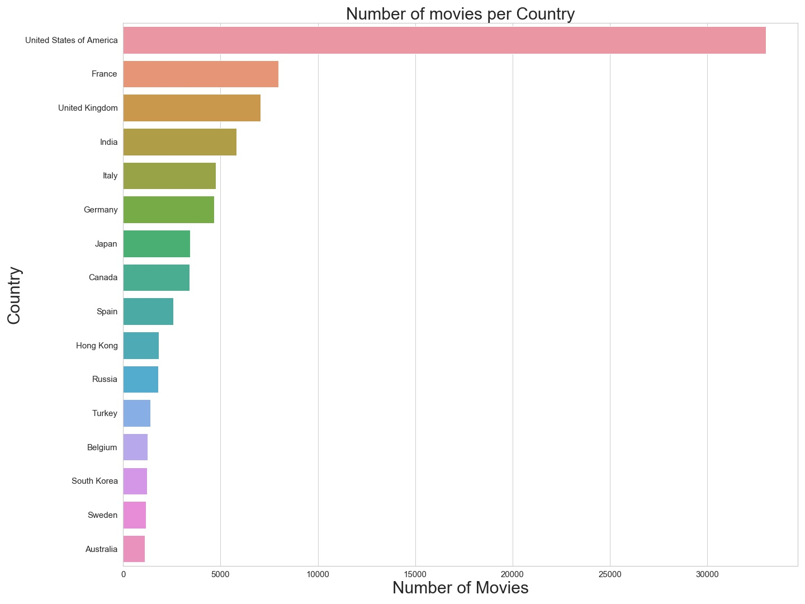

A first dataset we will explore is the film Award from IMDB which contains awards from 1886 to
2020.
As our project will focus on an evolution through time, having such a range of data will be
useful
but we have to consider disparity due to event existence.
What is the existence period
of
each
event
pre-selected to these days?
Most frequent and relevant events in the dataset are, by preprocessing: Emmy Awards, BAFTA
Awards,
Academy Awards (USA), News & Documentary Emmy Awards, Online Film & Television Association,
Grammy
Awards, Cannes Film Festival, Gold Derby Awards, Berlin International Film Festival, Gemini
Awards,
Leo Awards, Adult Video News Awards, Young Artist Awards. We notice a distinction between the
Event
and Award names as some awards names might be more meaningful than their associated events. If
we
take the Oscar for exemple, theses are awards delivered during the Academy Awards. This is a
nuance
that we will have to investigate in order to make our visualization as relevant as possible.
How
many awards are there per event?
This dataset also contains distinction between primary and secondary prices. For the scope of
our
visualisation we retain only primary prizes awarded to film or people. In order to have an
unbiased
result, we are also interested in the proportion of nominees or winners for each of the
ceremonies
selected for our study (i.e. most frequent/popular).
How much information we lose if we reduce
our
study to the winners?
To join awards information with movies country production we are using the dataset of IMDB Movies that contains around 80 000 films. Since our study period extends over a century, we have to manually change the names of countries that no longer exist as Soviet Union for Russia, West Germany for Germany… We hope that the majority of the films/persons nominated in the most popular ceremonies of the last 100 years will be present in this dataset. In this purpose, as we are distinguishing nominations from their country-production aspect it can be interesting to know : How many movies are represented by country in the IMDB dataset? A country not present in this dataset will most likely not be represented in our visualization.
You can find here the IMDB Awards dataset and the IMDB Movies
During our dataset analysis, multiple questions were raised that we tried to answer through some
visualisations of our data. There is two main endpoints in our visualisation : Film-producing
countries and Events/Awards.
We have to decide whether to consider the event or its awards as it changes the access to our
visualization. We need a name that speaks to the largest number of people and at the same time
makes sense from the point of view of our cinematic study. Considering the event rather than the
award leads to a difference in the selected ceremonies and therefore in the total distribution
of our countries. This is a major decision in the relevance of our final visualization.
How many awards are there per event?
Our next analysis concern the feasibility of our visualisation considering one century of
evolution over Cinema Awards.
What is the existence period of each event pre-selected to these days?
We observe that we should have enough data to cover all the century in a representative way.
Note that awards followed the repartition of event as expected. Moreover some name coincides and
taking the awards instead of event name doesn’t seems to include any biais here.
Having relevant visualisation imply to use relevant data. Is it pertinent to consider winners
and nominees, can we reduce our sample to winners as there are the most impacted by an award?
How much information we lose if we reduce our study to the winners?
Here again the distinction between events and awards doesn’t seem to have a notable impact on
our data repartition. However we saw that we are losing a huge part of data by only selecting
winners. Keeping both remains appropriate to our goal since a nominated film will still have
more visibility than one without a price.
An overview of the biases that could be included by considering only nominated films and not
people was also an important subject. This would make it easier for us to match the actor's
nomination with the country of production of the film in which he or she was nominated.
From this visualisation, we get that one more time the distinction between awards or event
doesn’t change the global repartition. This confirm us in the fact that most popular awards are
linked to most popular events. However is show us that by deleting people from our study we risk
considerably influencing the total distribution of awards and thus our countries of production.
As we link our award dataset to our film dataset in purpose to match award to film-producing
country, we have to make sure that we have enough countries represented in our IMDB dataset to
conduct an interesting study.
How many movies are represented by country in the IMDB dataset?

Data Visualisation project